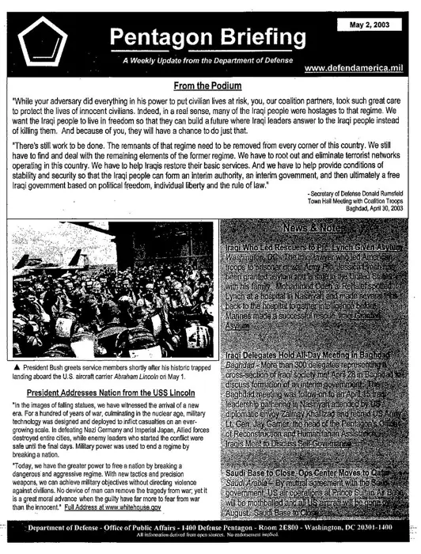

Pentagon Inspector General Details U.S. Losses and Challenges in Iran War

What happened
CNN reported: “Missile shortages, damage to US facilities: Pentagon watchdog issues first review of Iran war” [5].
Breaking Defense framed the same development as: “‘Hundreds’ of buildings, ‘dozens’ of aircraft destroyed or damaged during Iran ops: DoD IG” [4].
6 distinct outlets were tracked covering this story today.
How outlets are reporting it
The New York Times: “Pentagon Inspector General Details U.S. Losses and Challenges in Iran War” [1]
dailypress.com: “Pentagon Inspector General details U.S. losses and challenges in Iran war” [2]
NBC News: “Pentagon watchdog says Iran war has led to munitions shortfall” [3]
Breaking Defense: “‘Hundreds’ of buildings, ‘dozens’ of aircraft destroyed or damaged during Iran ops: DoD IG” [4]
CNN: “Missile shortages, damage to US facilities: Pentagon watchdog issues first review of Iran war” [5]
The Boston Globe: “US troops must prepare to fight around the moon, Trump’s top military adviser says” [6]
Background and context
This brief aggregates 6 independent publishers covering the same event; each headline in the section above reflects that outlet’s own framing. Full original reporting is linked in the sources panel below.
Why it matters and what to watch
Sustained coverage across 6 outlets signals this story is developing and likely to move.
For the latest figures, official statements and corrections, follow the linked originals.
Sources & further reading
- The New York Times Pentagon Inspector General Details U.S. Losses and Challenges in Iran War
- dailypress.com Pentagon Inspector General details U.S. losses and challenges in Iran war
- NBC News Pentagon watchdog says Iran war has led to munitions shortfall
- Breaking Defense ‘Hundreds’ of buildings, ‘dozens’ of aircraft destroyed or damaged during Iran ops: DoD IG
- CNN Missile shortages, damage to US facilities: Pentagon watchdog issues first review of Iran war
- The Boston Globe US troops must prepare to fight around the moon, Trump’s top military adviser says